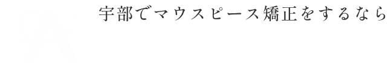
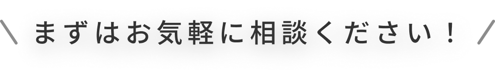
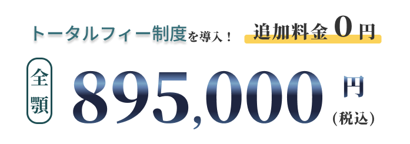
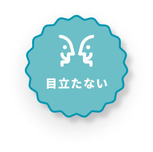
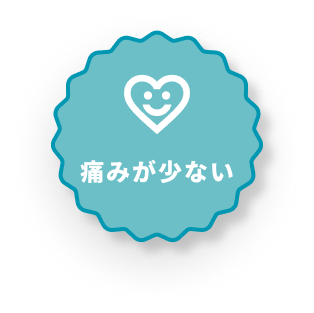
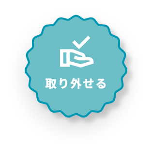
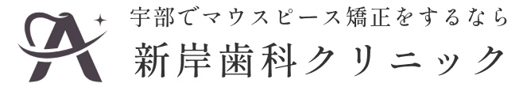

マウスピース矯正とは
特徴
矯正の流れ
費用
よくある質問
アクセス
1234-56-7890
TEL

WEB予約はこちら
WEB予約
透明だから気づかれない。
マウスピース矯正で自然な笑顔へ

  
お悩み
マウスピース矯正とは
特徴
流れ
費用
よくある質問
Q
治療に痛みはありますか？
Q
矯正期間中に注意することはありますか？
Q
矯正器具が壊れたり・なくしたりした場合はどうしたらいいでしょうか？
しゃべりにくさがありますか？
治療開始直後は、違和感が強く出てしゃべりにくさを感じる場合があります。ただ、数日でなれる場合が多く、あまり心配する必要はありません。
お手入れは難しくありませんか？
基本的には、水道水での洗浄で問題ありません。高温(40℃以上)になるとマウスピースが変形する恐れがあるため、ご注意ください。より清潔に使用したい場合は、専用の洗浄剤の使用をおすすめします。
精密検査ではどのようなことをしますか？
顔と口内の写真撮影・レントゲン・口腔内スキャナーなどの撮影を主におこないますが、内容は症状に応じて変わります。
アクセス

診療時間
月
火
水
木
金
土
日
09:00～13:00
○
○
○
○
○
○
×
14:30～20:00
○
○
○
○
○
×
×
休診日：土曜午後・日曜・祝日
※学会等で休診になる場合があります。その際はHPでお知らせします。
住所
〒755-0033
山口県宇部市琴芝町X丁目XX番地XX
アクセス
XX駅から徒歩5分 駐車場あり
電話番号
1234-56-7890